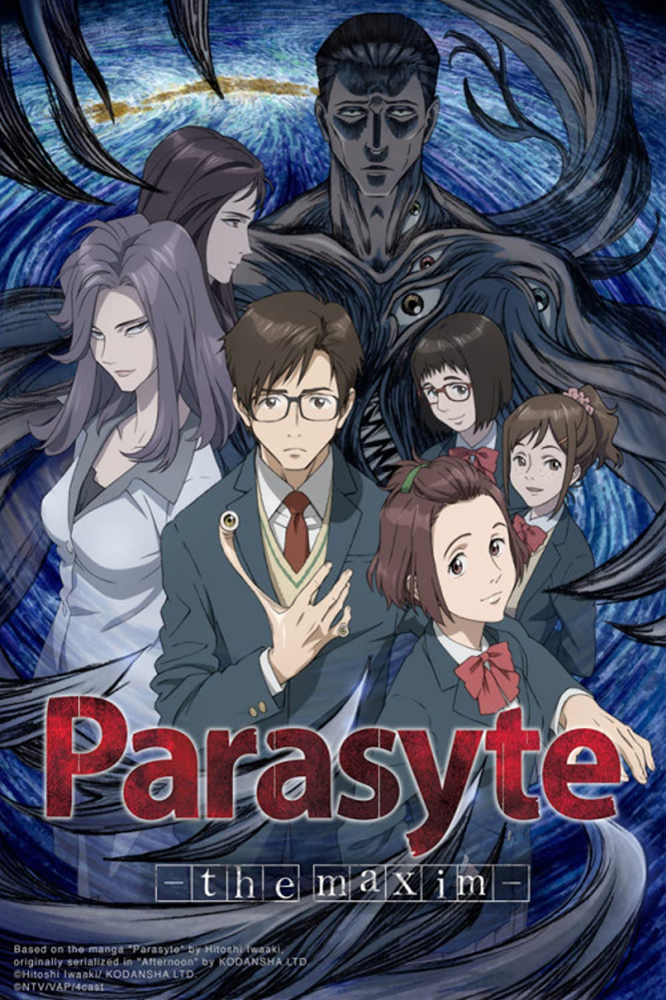

Parasyte - Hitoshi Iwaaki

Overview & Recap
Parasyte is a horror/thriller anime based off of a manga. It follows seventeen year old high school student Shinichi Izumi. One day, a tiny worm-like creatures called 'parasites' invade earth, taking control of their hosts' bodies. One tries to crawl into Shinichi's brain but he manages to stop it from doing so, and it takes over his right arm. This parasite is then known as Migi. Because Migi wasn't ablt to take over Shinichi's brain, both he and Shinichi have their own intellectual thoughts and personalities. Throuhgout the series, they work together to fight other parasites.
Review
yoooo i wasnt expecting much when i started this anime but its actually pretty good. It had a good amount of 'gore' (i didnt find it gorey but if you cant gore i suggest you dont watch) and was at a reasonable pace. I found one of the characters hella annoying but she disappears early enough so thats all good :). Shinichi changed a lot throughout the anime and this was largely due to the plot, which was well thought through. Some of the characters were really funny and lovable (e.g. jaw) and other i really wanted to punch them in the face, so the anime did a good job evoking certain feelings from the audience.
Rating
hmm i would give this anime a 3.5/5 because i really enjoyed it but i dont think i would watch it again.